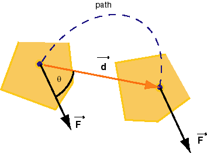

Work
Work done by a constant force: definition in one, two,
or three dimensions
The definition of work done on a system is illustrated here in
terms of a five-sided object that undergoes both translational and
rotational motion. Figure 1 below shows the object at the initial
and final moments of the time interval for which we want to define
the work done on the object.

Figure 1
The definition of work done by a force involves the force and the
displacement of the point at which the force is acting. In general,
the displacement of the point at which the force is acting is not in
the same direction as the force. In Figure 1, the angle between the
force and this displacement is indicated by the symbol q (Greek letter; read: theta). Whether the
directions of the displacement and that of the force are the same or
not, the work done by the force is defined as follows.
Definition. Suppose the force  acting on an object is
constant during some time interval and that the point
at which the force is acting on the object undergoes a
displacement
acting on an object is
constant during some time interval and that the point
at which the force is acting on the object undergoes a
displacement  during this time. Then the work W done on the object
by the force is defined by
during this time. Then the work W done on the object
by the force is defined by
W =  = Fd cos θ
= Fx dx +
Fy dy,
= Fd cos θ
= Fx dx +
Fy dy,
i.e., by the scalar product (dot product) between the force
and the displacement. Here, θ is
the angle between the two vectors and . If the motion is three-dimensional and the
displacement has a non-zero z-component
dz, a third term Fz
dz must be added to Fx
dx + Fy dy in the
equation above. If the motion is one-dimensional and entirely
along the x-axis, only the term Fx
dx is needed on the right-hand side.
The scalar product can be calculated either in terms of the
angle θ and the magnitudes F
and d of the two vectors or in terms of the Cartesian
components of the two vectors. In the case illustrated in
Figure 1, the work W is positive because the angle
θ is less than 90 degrees so that
its cosine is positive. If θ >
90o, the work is negative.
Comments.
1. The point at which the force is acting is indicated by
a black dot in Figure 1. The arrow representing the force is
drawn with its tail end placed at this point. The stippled
line indicates the path along which the point moves. The
shape of this path, roughly a semi-circle in Figure 1, does
not enter into the expression for the work above. The only
thing that matters is the net displacement of the point of action of the
force.
2. Similarly, the fact that the object undergoes a
rotation during the displacement has no bearing on the work done by the
force . What
matters is only the displacement of the point of action of the
force.
3. is not
the only force that is acting on the object. (The other
forces are not shown.) The object could not be moving along
the stippled path if were the only force. (Why not?) The fact that
other forces are present has no bearing on how the work done
by just is
calculated. We could calculate the work done by the other
forces in the same fashion.
If we add the amounts of work done by all individual
forces, we get what is called the net work done on the
object.